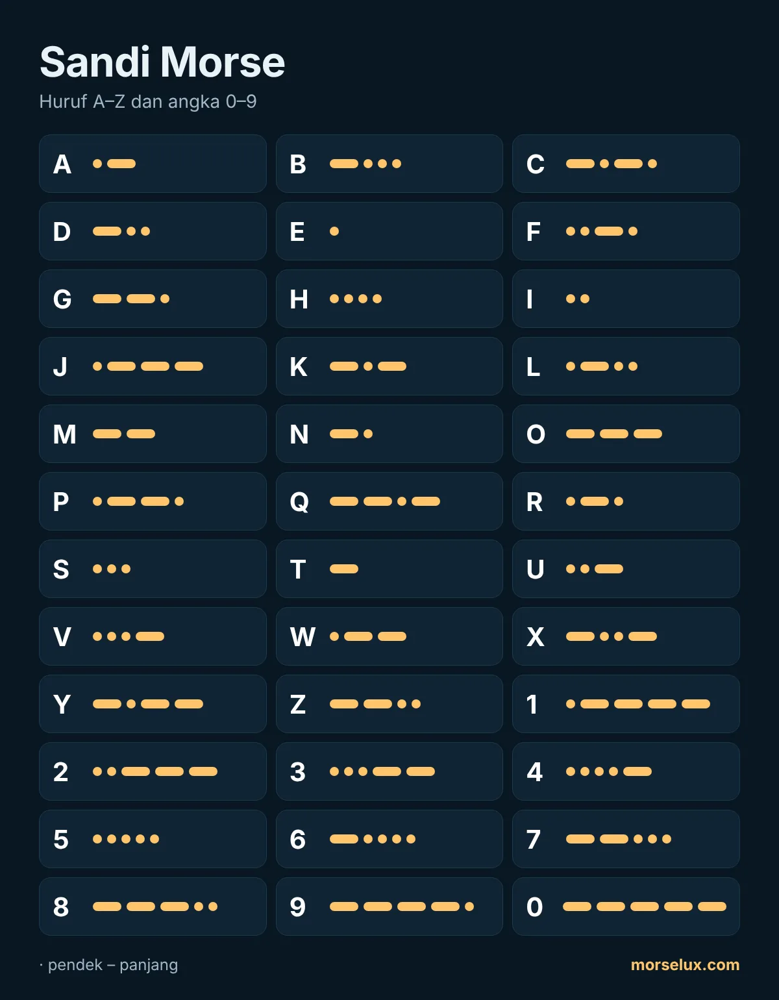

- Dengarkan, jangan dihitung. Pada kecepatan sebenarnya titik dan garis tidak sempat dihitung; setiap huruf adalah pola bunyi.
- Pasangan berlawanan membantu: A (·–) dan N (–·), D (–··) dan U (··–), G (––·) dan W (·––) saling bercermin.
- Berlatih dalam sesi pendek. Sepuluh sampai lima belas menit sehari lebih baik daripada satu sesi panjang seminggu sekali.
- Pakai. Ketik sebuah kata di penerjemah sandi Morse dan coba dengar huruf-hurufnya sebelum membacanya.
MorseLux › Tabel
·–·· ··– –··– Tabel · ketuk untuk mendengar
Tabel sandi Morse
Semua huruf, angka, dan tanda baca sandi Morse internasional. Ketuk sebuah tanda untuk mendengar bunyinya – begitulah cara belajar Morse yang sebenarnya.
Huruf A–Z
Angka dalam sandi Morse (0–9)
Angka selalu terdiri dari lima sinyal sehingga mudah dipelajari: 1 sampai 5 diawali titik, 6 sampai 0 diawali garis.

Tanda baca
| Tanda | Morse | Dengarkan |
|---|---|---|
| . | ·–·–·– | |
| , | ––··–– | |
| ? | ··––·· | |
| ' | ·––––· | |
| ! | –·–·–– | |
| / | –··–· | |
| ( | –·––· | |
| ) | –·––·– | |
| & | ·–··· | |
| : | –––··· | |
| ; | –·–·–· | |
| = | –···– | |
| + | ·–·–· | |
| - | –····– | |
| _ | ··––·– | |
| " | ·–··–· | |
| $ | ···–··– | |
| @ | ·––·–· |
Huruf khusus (É, Ñ, Ä, Ç…)
Huruf-huruf ini bagian dari sandi Morse yang diperluas dan dipakai dalam beberapa bahasa. Bahasa Indonesia cukup memakai 26 huruf A–Z.
| Tanda | Morse | Dengarkan |
|---|---|---|
| Ä | ·–·– | |
| Ö | –––· | |
| Ü | ··–– | |
| ß | ···––·· | |
| Ñ | ––·–– | |
| É | ··–·· | |
| À | ·––·– | |
| È | ·–··– | |
| Ç | –·–·· | |
| Ğ | ––·–· | |
| Ş | ·––·· |
Tips menghafal sandi Morse
Pertanyaan umum
Ada berapa tanda dalam sandi Morse?
Sandi Morse internasional punya tanda untuk 26 huruf A–Z, sepuluh angka 0–9, dan tanda baca yang paling umum. Beberapa bahasa menambahkan hurufnya sendiri, seperti É atau Ñ.
Apakah sandi Morse Pramuka sama dengan sandi Morse internasional?
Ya. Sandi Morse yang dipelajari di Pramuka adalah sandi Morse internasional yang sama; yang berbeda hanya cara mengirimnya, misalnya dengan peluit, senter, atau bendera.
Bisakah tabel sandi Morse dicetak?
Bisa. Pakai tombol «Unduh PDF» di bagian atas halaman: satu lembar A4 berlatar terang, cocok untuk kelas atau latihan Pramuka.
Huruf mana yang paling pendek dan paling panjang?
Yang paling pendek adalah E (·) dan T (–). Di antara huruf, yang paling panjang terdiri dari empat sinyal, seperti Q (––·–) dan Y (–·––); angka selalu lima sinyal.